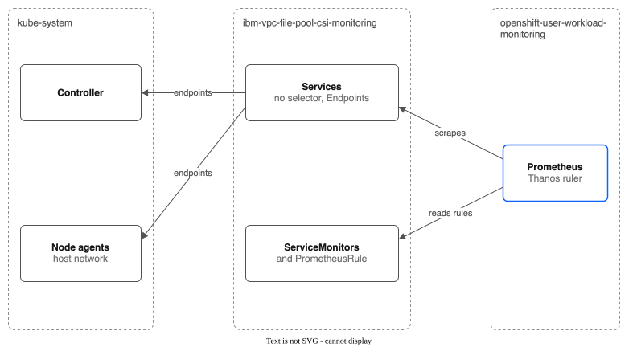

Monitoring Guide — IBM VPC File Pool CSI Driver¶
Complete metrics reference, alerting rules, and dashboard templates for operating the pool CSI driver in production.
Overview¶
The controller exposes Prometheus metrics on :8080/metrics over HTTPS (callers need a token that may get /metrics). All metrics use the vpc_file_pool_ or pool_csi_ prefix and follow the Prometheus naming conventions.
The driver emits 37 metrics across nine categories:
| Category | Metrics | Purpose |
|---|---|---|
| Allocation | 9 | PVC provisioning health and capacity |
| VPC API | 2 | API call success rate and latency |
| Snapshots | 2 | Snapshot operation tracking |
| Clones | 2 | Clone operation tracking |
| Group Snapshots | 4 | Multi-PVC snapshot coordination |
| Replication | 5 | Cross-region DR health |
| CDI | 1 | CDI copy pod memory limit |
| Backup | 6 | Backup policy health, age of backups, fullness of the snapshot pool and lateness of the export to COS |
| Share (node agent) | 6 | Bytes written on each share, and NFS operations, latency and bytes of each share, read by the node agents |
Scrape Configuration¶
Where alerts run on OpenShift¶
On OpenShift (ROKS and ROVS) the alerts and the scraping need user workload monitoring to be on. If it is off, nothing evaluates the alerts, and no alert ever fires.
Why: the driver must stay in kube-system (the managed API key secret storage-secret-store lives there). OpenShift's platform monitoring reads only namespaces labelled openshift.io/cluster-monitoring=true, and Red Hat says not to put that label on namespaces that are not part of the platform, and not to create your own ServiceMonitor or PrometheusRule objects in kube-* or openshift-* namespaces. So platform monitoring cannot read the driver where it lives.
What the chart does instead (metrics.monitoring.mode: auto, which applies when the cluster has the Prometheus Operator API and the OpenShift console and webhook.certProvider=openshift):
- It makes a small namespace,
ibm-vpc-file-pool-csi-monitoring(change it withmetrics.monitoring.namespace). It has no platform monitoring label. - The two
ServiceMonitorobjects (controller and node agents) and thePrometheusRulelive in that namespace. User workload monitoring reads them. - Two Services there have no selector. The controller keeps their
Endpointsup to date every minute (the controller pod's IP, and the IP of each ready node agent; node agents use the host network). Kubernetes mirrors them to EndpointSlices. - The
ServiceMonitorobjects send the token of a service account in that namespace (kept in a Secret, because user workload monitoring does not read files) and trust the OpenShift service CA from a ConfigMap in that namespace. They check the certificate against the names of the Services inkube-system, which is what the service CA issued it for. - The chart never changes
cluster-monitoring-config.

The admin step. Turn user workload monitoring on once per cluster. The chart does not do this, because it is a cluster-wide setting that belongs to the cluster admin:
# If the ConfigMap does not exist yet:
cat <<'YAML' | oc apply -f -
apiVersion: v1
kind: ConfigMap
metadata:
name: cluster-monitoring-config
namespace: openshift-monitoring
data:
config.yaml: |
enableUserWorkload: true
YAML
# If it exists, add "enableUserWorkload: true" to its config.yaml instead:
oc -n openshift-monitoring edit configmap cluster-monitoring-config
How to check that alerts are evaluated:
oc -n openshift-user-workload-monitoring get pods # prometheus-user-workload and thanos-ruler-user-workload are Running
oc -n ibm-vpc-file-pool-csi-monitoring get servicemonitor,prometheusrule,endpoints
oc -n ibm-vpc-file-pool-csi-monitoring get events # no UserWorkloadMonitoringOff warning
In the console, Observe > Alerting shows the driver's alerts under "Alerting rules" (choose the monitoring project). The controller also checks at start: if user workload monitoring is off it logs a warning and records a UserWorkloadMonitoringOff event on the monitoring namespace. It checks only at start, so restart the controller after you turn it on to clear the warning.
On clusters without OpenShift (or with metrics.monitoring.mode=disabled) the ServiceMonitor objects and the PrometheusRule stay in the release namespace, as before, and your Prometheus must read that namespace.
Red Hat sources:
- Turning on user workload monitoring (
enableUserWorkload: trueincluster-monitoring-config; needs cluster-admin; then check that theprometheus-operator,prometheus-user-workloadandthanos-ruler-user-workloadpods run inopenshift-user-workload-monitoring): OpenShift 4.18 documentation (the setting is the same in 4.21, as tested on rovslab-dr-eude running 4.21.31), Configuring user workload monitoring. - Support guidance that you should not create your own
ServiceMonitorobjects inopenshift-*orkube-*projects: https://access.redhat.com/node/7024333. - Support guidance that you should not put the
openshift.io/cluster-monitoringlabel on your own namespaces: https://access.redhat.com/solutions/6992399. - Keeping a project out of user workload monitoring (label
openshift.io/user-monitoring=false; the monitoring namespace of this chart must not have it): Disabling monitoring for user-defined projects (Red Hat OpenShift Service on AWS documentation; the label works the same way in OpenShift Container Platform).
Prometheus Operator (ServiceMonitor)¶
The node agents serve their own metrics (the "Share Metrics (Node Agent)" section) over HTTPS on port node.metricsPort (9810). The caller must send a bearer token that the API server accepts, and its user must be allowed to get the URL /metrics. The chart makes a headless Service and a second ServiceMonitor (<release>-node) that send the pod's service account token, and it binds a <release>-metrics-reader ClusterRole to metrics.scraper.serviceAccount (prometheus-k8s in openshift-monitoring). The node agent serves a certificate that Prometheus checks (the token it sends is its own, so it must not go to a stranger). The certificate comes from webhook.certProvider, as for the webhooks: openshift asks the service CA (the ServiceMonitor trusts the service CA bundle that OpenShift's Prometheus mounts); cert-manager makes a Certificate; manual needs a secret <release>-ibm-vpc-file-pool-csi-node-metrics-certs with tls.crt, tls.key and ca.crt, made by you, in the release namespace. With the last two the ServiceMonitor trusts ca.crt of that secret. The name it checks is <release>-ibm-vpc-file-pool-csi-node-metrics.<namespace>.svc. The node agents need to read FileSharePools to name the shares. Set node.metricsPort=0 to turn the endpoint off.
The controller's :8080/metrics is HTTPS with the same token login and a certificate Prometheus checks, from webhook.certProvider (secret <release>-ibm-vpc-file-pool-csi-metrics-certs for manual). Anything that scraped it over plain HTTP, such as your own Prometheus config, must now use https, a bearer token and the CA.
The Helm chart creates a ServiceMonitor for the controller when the cluster has the Prometheus Operator API (monitoring.coreos.com/v1). OpenShift has it. To turn it off, set metrics.serviceMonitor.enabled=false.
The console plugin's charts read these metrics. Without the ServiceMonitor, they show no data. The console queries 19 of the first 22 metrics on its other pages, and the other three are charted in the Monitoring tab's "Group Snapshot and CDI Activity" section; the two per-share metrics are used by the VPCFilePoolShareNearlyFull alert and have no panel; the VM copy metrics named in the VM-safe replication spec do not exist yet, so they have no panel.
OpenShift User Workload Monitoring¶
On OpenShift, user workload monitoring must be on for Prometheus to read the ServiceMonitor in kube-system:
oc -n openshift-monitoring get configmap cluster-monitoring-config -o yaml | grep enableUserWorkload
Check that Prometheus scrapes the controller (tested on ROVS 4.21):
oc -n openshift-user-workload-monitoring exec -c prometheus prometheus-user-workload-0 -- \
curl -s 'http://localhost:9090/api/v1/query?query=vpc_file_pool_share_count'
Manual Scrape Config (prometheus.yml)¶
If not using the Prometheus Operator, add a scrape job:
scrape_configs:
- job_name: 'vpc-file-pool-csi'
kubernetes_sd_configs:
- role: pod
namespaces:
names: ['kube-system']
relabel_configs:
- source_labels: [__meta_kubernetes_pod_label_app_kubernetes_io_component]
regex: controller
action: keep
- source_labels: [__meta_kubernetes_pod_container_port_number]
regex: "8080"
action: keep
- source_labels: [__meta_kubernetes_namespace]
target_label: namespace
- source_labels: [__meta_kubernetes_pod_name]
target_label: pod
Verifying Scrape¶
# Port-forward to the metrics endpoint
kubectl port-forward -n kube-system svc/ibm-vpc-file-pool-csi-metrics 8080:8080 &
# Check that metrics are being exported
curl -s http://localhost:8080/metrics | grep vpc_file_pool | head -20
# Clean up
kill %1
Complete Metric Reference¶
Allocation Metrics¶
| Metric | Type | Labels | Description |
|---|---|---|---|
vpc_file_pool_allocations_total |
Counter | pool, status |
Total subvolume allocations. status is success, error, deallocate_success or deallocate_error. |
vpc_file_pool_allocation_duration_seconds |
Histogram | pool |
Time to allocate a subvolume. Buckets: 10ms to ~163s (exponential). |
vpc_file_pool_capacity_gb |
Gauge | pool |
Total pool capacity in GB across all shares. |
vpc_file_pool_allocated_gb |
Gauge | pool |
Total allocated (requested) capacity in GB. |
vpc_file_pool_share_count |
Gauge | pool |
Number of VPC file shares in the pool. |
vpc_file_pool_max_shares |
Gauge | pool |
Most shares the pool may have (spec.maxShares). |
vpc_file_pool_share_total_gb |
Gauge | pool, share |
Provisioned size of one share of the pool in GB. share is the VPC share name. |
vpc_file_pool_share_allocated_gb |
Gauge | pool, share |
Capacity allocated to PVCs on one share, in GB. This is what PVCs asked for, not what they wrote. |
vpc_file_pool_pvc_count |
Gauge | pool |
Number of active PVCs (SubVolumes) in the pool. |
Normal ranges:
| Metric | Healthy Range | Investigate If |
|---|---|---|
allocations_total{status="error"} |
0 | Any errors — check controller logs |
allocation_duration_seconds |
< 1s (p99) | > 5s — pool may be expanding or unhealthy |
capacity_gb - allocated_gb |
> 20% of capacity | < 10% — pool approaching full |
share_count |
1 to maxShares |
At maxShares — cannot auto-expand |
VPC API Metrics¶
| Metric | Type | Labels | Description |
|---|---|---|---|
vpc_file_pool_api_calls_total |
Counter | operation, status |
Total VPC API calls. operation is the API method (e.g., create_share, get_share). status is success or error. |
vpc_file_pool_api_call_duration_seconds |
Histogram | operation |
VPC API call duration. Buckets: 100ms to ~1638s (exponential). |
Normal ranges:
| Metric | Healthy Range | Investigate If |
|---|---|---|
api_calls_total{status="error"} |
0 in steady state | Sustained errors — check VPC API status, auth, quotas |
api_call_duration_seconds |
1-90s for create_share, < 5s for get_share |
> 120s — VPC API may be degraded |
Snapshot Metrics¶
| Metric | Type | Labels | Description |
|---|---|---|---|
vpc_file_pool_snapshots_total |
Counter | pool, operation, status |
Snapshot operations. operation: create, delete, restore. status: success, error. |
vpc_file_pool_snapshot_duration_seconds |
Histogram | pool, operation |
Time for snapshot operations. Proportional to data size. |
Clone Metrics¶
| Metric | Type | Labels | Description |
|---|---|---|---|
vpc_file_pool_clones_total |
Counter | pool, status |
Clone operations by outcome. status: success, error (request accepted or rejected by the controller), async_success, async_error (copy Job finished). |
vpc_file_pool_clone_duration_seconds |
Histogram | pool |
Time from the clone worker picking up a clone to the end of its copy Job. |
Group Snapshot Metrics¶
| Metric | Type | Labels | Description |
|---|---|---|---|
vpc_file_pool_group_snapshots_total |
Counter | pool, operation, status |
Group snapshot operations. operation: create, delete. |
vpc_file_pool_group_snapshot_duration_seconds |
Histogram | pool, operation |
Time for group snapshot operations (total, all members). |
vpc_file_pool_group_snapshot_member_count |
Histogram | pool |
Number of PVCs per group snapshot. Buckets: 1 to 20. |
vpc_file_pool_group_snapshot_inconsistency_window_ms |
Histogram | pool |
Time between first and last member copy in milliseconds. Lower is better for consistency. |
Replication Metrics¶
| Metric | Type | Labels | Description |
|---|---|---|---|
pool_csi_replication_sync_total |
Counter | policy, source_pool, result |
Replication sync attempts. result: success or failure. |
pool_csi_replication_sync_duration_seconds |
Histogram | policy, source_pool |
Duration of replication sync cycles. |
pool_csi_replication_lag_seconds |
Gauge | policy, source_pool |
Current replication lag (seconds since last successful sync). This is your RPO indicator. |
pool_csi_replication_consecutive_failures |
Gauge | policy, source_pool |
Current consecutive failure count. Policy pauses after exceeding maxRetries. |
pool_csi_replication_subvolume_count |
Gauge | policy, source_pool |
Number of SubVolumes being replicated per policy. |
Normal ranges:
| Metric | Healthy Range | Investigate If |
|---|---|---|
replication_lag_seconds |
< 2x the schedule interval | > 3x schedule — sync is falling behind |
replication_consecutive_failures |
0 | > 0 — check connectivity to destination NFS |
replication_sync_duration_seconds |
< schedule interval | > schedule — syncs overlap, data too large |
CDI Metrics¶
| Metric | Type | Labels | Description |
|---|---|---|---|
vpc_file_pool_cdi_copy_limit_raised_total |
Counter | none | Times the controller raised the memory limit of CDI's copy pods (HyperConverged spec.resourceRequirements.storageWorkloads) to cdi.copyPodMemoryLimit. The controller also logs a warning each time. The first raise is normal. A later raise means something, such as an update of IBM's add-on, put the old value back. |
Share Metrics (Node Agent)¶
Each node agent reads the NFS shares mounted on its node, every --share-stats-interval (30 s). It reads the NFS counters in /proc/self/mountstats and runs statfs on the share mount, up to 8 mounts at once; it never walks the files. pool and share are the same names as the controller's per-share metrics. A share mounted on several nodes is reported by each node (the scrape adds an instance label), so use max by (pool, share) for the space metrics and sum by (pool, share) for the traffic counters. A share that is mounted nowhere has no series. A share whose pool cannot be found has pool="unknown".
| Metric | Type | Labels | Description |
|---|---|---|---|
vpc_file_pool_share_used_bytes |
Gauge | pool, share |
Bytes written on the share (size minus free, from statfs). Absent when statfs fails or takes more than 10 s; after a failure the node agent does not try that mount again for 5 minutes. |
vpc_file_pool_share_size_bytes |
Gauge | pool, share |
Size of the share as the NFS client sees it. |
vpc_file_pool_share_nfs_operations_total |
Counter | pool, share, op |
NFS operations done by this node. op is read, write or other (all metadata calls). rate() of read and write is the IOPS. |
vpc_file_pool_share_nfs_rtt_seconds_total |
Counter | pool, share, op |
Seconds spent between sending a request and getting the reply (the network and the server). |
vpc_file_pool_share_nfs_execute_seconds_total |
Counter | pool, share, op |
Seconds from queueing a request to its end (the round trip plus the wait in the client). Latency per request is rate(execute) / rate(operations). |
vpc_file_pool_share_nfs_bytes_total |
Counter | pool, share, direction |
Bytes read from and written to the share. |
Latency per request, per share:
sum by (pool, share, op) (rate(vpc_file_pool_share_nfs_execute_seconds_total{op=~"read|write"}[5m]))
/ (sum by (pool, share, op) (rate(vpc_file_pool_share_nfs_operations_total{op=~"read|write"}[5m])) > 0)
Backup Metrics¶
| Metric | Type | Labels | Description |
|---|---|---|---|
vpc_file_pool_backup_volumes |
Gauge | policy |
Number of volumes a backup policy backs up. |
vpc_file_pool_backup_stalest_age_seconds |
Gauge | policy |
Age of the newest backup of the volume that was backed up longest ago. A volume that was never backed up counts from the time the policy was made. This is the RPO indicator of a backup policy. |
vpc_file_pool_backup_oldest_age_seconds |
Gauge | policy |
Age of the oldest backup the policy keeps. It should stay near keepFor. |
vpc_file_pool_backup_export_oldest_unexported_age_seconds |
Gauge | policy |
Age of the oldest backup moment that is in the snapshot pool and not yet in COS. 0 when everything is exported. Only for policies with spec.export. |
vpc_file_pool_backup_export_newest_age_seconds |
Gauge | policy |
Age of the newest export to COS (the moment it sent). Before the first export, it counts from the time the policy was made, once a backup exists. Only for policies with spec.export. This is the RPO indicator of the COS copy. |
vpc_file_pool_backup_snapshot_pool_used_percent |
Gauge | pool, share |
Percent of a share of the snapshot pool that is used, read by a Job about every 10 minutes (df). The controller cannot see this from custom resources: a pool counts only claims, not backups. Above 85%, the policies stop new backups to that share. |
Copy results of backups are in the replication metrics: the policies the controller makes are named backup-<policy>-<source pool>.
Alert when a backup is late, using twice the schedule as the limit (here 12 hours for a 6-hour schedule):
- alert: BackupLate
expr: vpc_file_pool_backup_stalest_age_seconds > 12 * 3600
for: 15m
annotations:
summary: "Backup policy {{ $labels.policy }} has a volume with no backup for over 12 hours"
Alert when the copy in COS is late, using twice the export schedule as the limit (here 12 hours for a spec.export.schedule of 6h; with no export schedule, use twice the backup schedule). The first alert is the age of the newest export; the second is a moment that waits too long to go out:
- alert: ExportLate
expr: vpc_file_pool_backup_export_newest_age_seconds > 12 * 3600
for: 15m
annotations:
summary: "Backup policy {{ $labels.policy }} has not exported to COS for over 12 hours"
- alert: ExportMomentWaiting
expr: vpc_file_pool_backup_export_oldest_unexported_age_seconds > 12 * 3600
for: 15m
annotations:
summary: "Backup policy {{ $labels.policy }} has a backup moment that has waited over 12 hours to go to COS"
An export problem never stops the backups to the snapshot pool. status.volumes[].exportError says what failed.
Alert before the snapshot pool reaches the limit, and when it has. At 85% the policies on the pool stop new backups; they never delete backups to make room, so the fix is more space or a shorter keepFor:
- alert: SnapshotPoolNearlyFull
expr: vpc_file_pool_backup_snapshot_pool_used_percent > 75
for: 30m
labels:
severity: warning
annotations:
summary: "Snapshot pool {{ $labels.pool }} is {{ $value }}% full; new backups stop at 85%"
- alert: SnapshotPoolFullBackupsStopped
expr: vpc_file_pool_backup_snapshot_pool_used_percent > 85
for: 15m
labels:
severity: critical
annotations:
summary: "Snapshot pool {{ $labels.pool }} is {{ $value }}% full; new backups are stopped"
Alerting Rules¶
The chart ships these alerts as a PrometheusRule (on by default; it is made only when the cluster has the Prometheus Operator API). Set the limits under metrics.alerts (see HELM-VALUES.md). A pool with no capacity, or a driver with no traffic, gives no alert. The rules are tested with promtool in make test-scripts.
| Alert | Severity | Fires when |
|---|---|---|
VPCFilePoolUtilizationWarning / Critical |
warning / critical | Pool use is above 80% / 95% |
VPCFilePoolOverCommitted |
critical | More is allocated than the pool has |
VPCFilePoolShareNearlyFull |
warning | One share has more than 90% of its size allocated for 15 minutes. With the binpack strategy shares fill one after another on purpose, so expect this alert there; raise metrics.alerts.shareUtilizationWarning or turn it off by setting it to 100. |
VPCFilePoolShareUsedHigh / Critical |
warning / critical | One share has more than 85% / 95% of its size written (real used bytes) for 15 minutes. Max over the nodes that mount it. |
VPCFilePoolShareNFSLatencyHigh |
warning | Reads or writes on one share take more than 0.1 s each on average for 10 minutes. Judged only while the share does at least 1 such request a second, so an idle share gives no alert and no NaN. |
VPCFilePoolShareIOPSHigh |
warning | Reads plus writes on one share, all nodes together, are above metrics.alerts.shareIOPSWarning per second. Off by default (value 0): set it near the IOPS of the share profile. |
VPCFilePoolAtMaxShares |
warning | The pool has its most shares and use is above the warning limit |
VPCFilePoolControllerDown |
critical | No metrics from the controller for 5 minutes |
VPCFilePoolAllocationFailures |
critical | More than 0.1 failed allocations per second |
VPCFilePoolAllocationSlow |
warning | P99 allocation time above 5 s |
VPCFilePoolAPIErrors |
warning | More than 0.05 failed VPC API calls per second |
VPCFilePoolSnapshotFailures |
warning | Snapshot operations fail |
VPCFilePoolReplicationLagHigh / ReplicationFailing |
warning / critical | Lag over 2 h, or more than 3 failures in a row |
VPCFilePoolBackupLate |
warning | A volume has no backup for over 12 h |
VPCFilePoolExportLate / ExportMomentWaiting |
warning | The COS copy is over 12 h late |
VPCFilePoolSnapshotPoolNearlyFull / Full |
warning / critical | A snapshot pool share is above 75% / 85% |
Per-share NFS latency and IOPS come from the node agents, which read the NFS client counters of each staged share (the vpc_file_pool_share_nfs_* metrics). The two alerts for them judge only a share that has real traffic.
Console dashboard. The dashboard's "Firing Alerts" card asks the cluster Prometheus (/api/prometheus) for firing alerts named VPCFilePool*. It also asks which alert rules that Prometheus has loaded; if it has none of the driver's, the card says so and does not claim that no alert is firing. OpenShift's platform Prometheus loads rules only from namespaces it watches (openshift-*, or kube-* with the openshift.io/cluster-monitoring label); if the chart is installed in another namespace, the rules need user workload monitoring, which the console queries through a different route that this card does not use.
The examples below are older hand-written rules, kept to show how to write your own. They use different names; if you load them as well as the chart's, you get two alerts for the same problem.
Critical Alerts¶
These require immediate attention — they indicate data loss risk or service degradation.
apiVersion: monitoring.coreos.com/v1
kind: PrometheusRule
metadata:
name: vpc-file-pool-csi-critical
namespace: kube-system
labels:
app: vpc-file-pool-csi
spec:
groups:
- name: vpc-file-pool-csi.critical
rules:
- alert: PoolAtMaxCapacity
expr: |
vpc_file_pool_allocated_gb / vpc_file_pool_capacity_gb > 0.95
and
vpc_file_pool_share_count >= vpc_file_pool_share_count
for: 5m
labels:
severity: critical
annotations:
summary: "Pool {{ $labels.pool }} is over 95% allocated"
description: "Pool {{ $labels.pool }} has less than 5% capacity remaining. New PVC requests will fail if the pool cannot expand. Check maxShares and VPC quota."
runbook_url: "TROUBLESHOOTING.md#pool-full--maxshares-reached"
- alert: PoolAtMaxShares
expr: vpc_file_pool_share_count >= 300
for: 1m
labels:
severity: critical
annotations:
summary: "Pool {{ $labels.pool }} may be at VPC account share limit (300)"
description: "The pool has 300+ shares, which is the VPC account default limit. New share creation will fail."
runbook_url: "TROUBLESHOOTING.md#quota-exceeded-300-shares"
- alert: AllocationFailureRate
expr: rate(vpc_file_pool_allocations_total{status="error"}[5m]) > 0.1
for: 5m
labels:
severity: critical
annotations:
summary: "High allocation failure rate in pool {{ $labels.pool }}"
description: "More than 0.1 allocation failures per second sustained for 5 minutes. PVC creation is failing."
runbook_url: "TROUBLESHOOTING.md#pvc-issues"
- alert: ControllerDown
expr: absent(up{job="ibm-vpc-file-pool-csi-metrics"} == 1)
for: 5m
labels:
severity: critical
annotations:
summary: "VPC File Pool CSI controller is down"
description: "No metrics received from the controller for 5 minutes. New PVC operations are blocked."
- alert: ReplicationPaused
expr: pool_csi_replication_consecutive_failures > 3
for: 10m
labels:
severity: critical
annotations:
summary: "Replication policy {{ $labels.policy }} is paused due to failures"
description: "Replication has {{ $value }} consecutive failures and is likely paused. DR data is stale."
runbook_url: "CROSS-REGION-DR.md"
Warning Alerts¶
These indicate potential issues that should be investigated during business hours.
apiVersion: monitoring.coreos.com/v1
kind: PrometheusRule
metadata:
name: vpc-file-pool-csi-warning
namespace: kube-system
labels:
app: vpc-file-pool-csi
spec:
groups:
- name: vpc-file-pool-csi.warning
rules:
- alert: PoolNearCapacity
expr: vpc_file_pool_allocated_gb / vpc_file_pool_capacity_gb > 0.85
for: 10m
labels:
severity: warning
annotations:
summary: "Pool {{ $labels.pool }} is over 85% allocated"
description: "Pool is nearing capacity. Verify autoExpand is enabled and maxShares has room."
- alert: AllocationSlowdown
expr: histogram_quantile(0.99, rate(vpc_file_pool_allocation_duration_seconds_bucket[5m])) > 5
for: 10m
labels:
severity: warning
annotations:
summary: "Slow PVC allocations in pool {{ $labels.pool }}"
description: "P99 allocation latency is {{ $value }}s (expected < 1s). Pool may be expanding or degraded."
- alert: VPCAPIErrorRate
expr: rate(vpc_file_pool_api_calls_total{status="error"}[10m]) > 0.05
for: 10m
labels:
severity: warning
annotations:
summary: "VPC API errors for {{ $labels.operation }}"
description: "Sustained VPC API errors detected. Check API key validity and VPC service status."
- alert: ReplicationLagHigh
expr: pool_csi_replication_lag_seconds > 7200
for: 30m
labels:
severity: warning
annotations:
summary: "Replication lag exceeds 2 hours for policy {{ $labels.policy }}"
description: "DR data is {{ $value | humanizeDuration }} behind. RPO may be violated."
- alert: SnapshotFailures
expr: rate(vpc_file_pool_snapshots_total{status="error"}[10m]) > 0
for: 10m
labels:
severity: warning
annotations:
summary: "Snapshot failures in pool {{ $labels.pool }}"
description: "Snapshot {{ $labels.operation }} operations are failing. Check share health and capacity."
- alert: GroupSnapshotHighInconsistency
expr: histogram_quantile(0.95, rate(vpc_file_pool_group_snapshot_inconsistency_window_ms_bucket[1h])) > 60000
for: 30m
labels:
severity: warning
annotations:
summary: "Group snapshot inconsistency window exceeds 60s in pool {{ $labels.pool }}"
description: "Large data volumes are causing wide inconsistency windows. Consider using pre-snapshot hooks for quiescing."
PromQL Query Cookbook¶
Capacity Planning¶
# Pool utilization percentage
vpc_file_pool_allocated_gb / vpc_file_pool_capacity_gb * 100
# Free capacity per pool (GB)
vpc_file_pool_capacity_gb - vpc_file_pool_allocated_gb
# Allocation rate (PVCs per hour)
rate(vpc_file_pool_allocations_total{status="success"}[1h]) * 3600
# Projected hours to full at current allocation rate
(vpc_file_pool_capacity_gb - vpc_file_pool_allocated_gb)
/ (deriv(vpc_file_pool_allocated_gb[1h]) + 0.001)
# Average PVC size (GB)
vpc_file_pool_allocated_gb / (vpc_file_pool_pvc_count > 0)
# PVCs per share
vpc_file_pool_pvc_count / (vpc_file_pool_share_count > 0)
Performance¶
# P50/P95/P99 allocation latency
histogram_quantile(0.5, rate(vpc_file_pool_allocation_duration_seconds_bucket[5m]))
histogram_quantile(0.95, rate(vpc_file_pool_allocation_duration_seconds_bucket[5m]))
histogram_quantile(0.99, rate(vpc_file_pool_allocation_duration_seconds_bucket[5m]))
# VPC API call rate by operation
rate(vpc_file_pool_api_calls_total[5m])
# P95 VPC API latency by operation
histogram_quantile(0.95, rate(vpc_file_pool_api_call_duration_seconds_bucket[5m]))
# API error ratio
rate(vpc_file_pool_api_calls_total{status="error"}[5m])
/ rate(vpc_file_pool_api_calls_total[5m])
Replication¶
# Current replication lag (RPO indicator)
pool_csi_replication_lag_seconds
# Sync success rate
rate(pool_csi_replication_sync_total{result="success"}[1h])
/ rate(pool_csi_replication_sync_total[1h])
# Average sync duration
rate(pool_csi_replication_sync_duration_seconds_sum[1h])
/ rate(pool_csi_replication_sync_duration_seconds_count[1h])
# SubVolumes per replication policy
pool_csi_replication_subvolume_count
Anomaly Detection¶
# Allocation rate spike (> 3x normal over 24h baseline)
rate(vpc_file_pool_allocations_total{status="success"}[5m])
> 3 * avg_over_time(rate(vpc_file_pool_allocations_total{status="success"}[5m])[24h:5m])
# Sudden capacity drop (possible mass deletion)
delta(vpc_file_pool_allocated_gb[5m]) < -100
# Share count instability (shares being created/removed frequently)
changes(vpc_file_pool_share_count[1h]) > 5
Grafana Dashboard¶
Import Instructions¶
- Copy the JSON below
- In Grafana, go to Dashboards > Import
- Paste the JSON and click Load
- Select your Prometheus data source
Dashboard JSON¶
{
"dashboard": {
"title": "IBM VPC File Pool CSI Driver",
"uid": "vpc-file-pool-csi",
"tags": ["storage", "csi", "vpc"],
"timezone": "browser",
"refresh": "30s",
"panels": [
{
"title": "Pool Utilization",
"type": "gauge",
"gridPos": {"h": 8, "w": 6, "x": 0, "y": 0},
"targets": [
{
"expr": "vpc_file_pool_allocated_gb / vpc_file_pool_capacity_gb * 100",
"legendFormat": "{{ pool }}"
}
],
"fieldConfig": {
"defaults": {
"unit": "percent",
"min": 0,
"max": 100,
"thresholds": {
"steps": [
{"color": "green", "value": 0},
{"color": "yellow", "value": 70},
{"color": "orange", "value": 85},
{"color": "red", "value": 95}
]
}
}
}
},
{
"title": "PVC Count by Pool",
"type": "stat",
"gridPos": {"h": 8, "w": 6, "x": 6, "y": 0},
"targets": [
{
"expr": "vpc_file_pool_pvc_count",
"legendFormat": "{{ pool }}"
}
]
},
{
"title": "Share Count by Pool",
"type": "stat",
"gridPos": {"h": 8, "w": 6, "x": 12, "y": 0},
"targets": [
{
"expr": "vpc_file_pool_share_count",
"legendFormat": "{{ pool }}"
}
]
},
{
"title": "Capacity (GB)",
"type": "stat",
"gridPos": {"h": 8, "w": 6, "x": 18, "y": 0},
"targets": [
{
"expr": "vpc_file_pool_capacity_gb - vpc_file_pool_allocated_gb",
"legendFormat": "{{ pool }} free"
}
],
"fieldConfig": {
"defaults": {
"unit": "decgbytes"
}
}
},
{
"title": "Allocation Rate (per minute)",
"type": "timeseries",
"gridPos": {"h": 8, "w": 12, "x": 0, "y": 8},
"targets": [
{
"expr": "rate(vpc_file_pool_allocations_total{status=\"success\"}[5m]) * 60",
"legendFormat": "{{ pool }} success"
},
{
"expr": "rate(vpc_file_pool_allocations_total{status=\"error\"}[5m]) * 60",
"legendFormat": "{{ pool }} error"
}
]
},
{
"title": "Allocation Latency (P50/P95/P99)",
"type": "timeseries",
"gridPos": {"h": 8, "w": 12, "x": 12, "y": 8},
"targets": [
{
"expr": "histogram_quantile(0.5, rate(vpc_file_pool_allocation_duration_seconds_bucket[5m]))",
"legendFormat": "{{ pool }} p50"
},
{
"expr": "histogram_quantile(0.95, rate(vpc_file_pool_allocation_duration_seconds_bucket[5m]))",
"legendFormat": "{{ pool }} p95"
},
{
"expr": "histogram_quantile(0.99, rate(vpc_file_pool_allocation_duration_seconds_bucket[5m]))",
"legendFormat": "{{ pool }} p99"
}
],
"fieldConfig": {
"defaults": {
"unit": "s"
}
}
},
{
"title": "VPC API Calls (per minute)",
"type": "timeseries",
"gridPos": {"h": 8, "w": 12, "x": 0, "y": 16},
"targets": [
{
"expr": "rate(vpc_file_pool_api_calls_total{status=\"success\"}[5m]) * 60",
"legendFormat": "{{ operation }} success"
},
{
"expr": "rate(vpc_file_pool_api_calls_total{status=\"error\"}[5m]) * 60",
"legendFormat": "{{ operation }} error"
}
]
},
{
"title": "VPC API Latency P95",
"type": "timeseries",
"gridPos": {"h": 8, "w": 12, "x": 12, "y": 16},
"targets": [
{
"expr": "histogram_quantile(0.95, rate(vpc_file_pool_api_call_duration_seconds_bucket[5m]))",
"legendFormat": "{{ operation }}"
}
],
"fieldConfig": {
"defaults": {
"unit": "s"
}
}
},
{
"title": "Replication Lag",
"type": "timeseries",
"gridPos": {"h": 8, "w": 12, "x": 0, "y": 24},
"targets": [
{
"expr": "pool_csi_replication_lag_seconds",
"legendFormat": "{{ policy }}"
}
],
"fieldConfig": {
"defaults": {
"unit": "s"
}
}
},
{
"title": "Replication Sync Duration",
"type": "timeseries",
"gridPos": {"h": 8, "w": 12, "x": 12, "y": 24},
"targets": [
{
"expr": "rate(pool_csi_replication_sync_duration_seconds_sum[5m]) / rate(pool_csi_replication_sync_duration_seconds_count[5m])",
"legendFormat": "{{ policy }} avg"
}
],
"fieldConfig": {
"defaults": {
"unit": "s"
}
}
}
]
}
}
Integration: IBM Cloud Monitoring (Sysdig)¶
If your cluster uses IBM Cloud Monitoring (powered by Sysdig), the Prometheus metrics are automatically collected if Sysdig agent is configured to scrape Prometheus endpoints:
# In the Sysdig agent configmap, ensure Prometheus scraping is enabled:
prometheus:
enabled: true
histograms: true
Create Sysdig alerts using PromQL syntax in the IBM Cloud Monitoring dashboard. The same PromQL queries from the cookbook above work in Sysdig.
Integration: Alertmanager Routing¶
Route CSI driver alerts to the storage team:
# alertmanager.yml
route:
routes:
- match:
job: ibm-vpc-file-pool-csi-metrics
receiver: storage-team
group_by: ['alertname', 'pool']
group_wait: 30s
group_interval: 5m
repeat_interval: 4h
receivers:
- name: storage-team
slack_configs:
- channel: '#storage-alerts'
title: '{{ .GroupLabels.alertname }}'
text: '{{ range .Alerts }}{{ .Annotations.description }}{{ end }}'
pagerduty_configs:
- service_key: '<your-pagerduty-key>'
severity: '{{ if eq .GroupLabels.severity "critical" }}critical{{ else }}warning{{ end }}'
See Also¶
- TROUBLESHOOTING.md — Metrics-specific troubleshooting (stale metrics, scrape failures)
- PERFORMANCE-TUNING.md — Capacity planning PromQL queries
- HELM-VALUES.md — Metrics endpoint configuration
- CAPACITY-PLANNING.md — Using metrics for growth projection
pkg/metrics/metrics.go— Metric definitions in source code